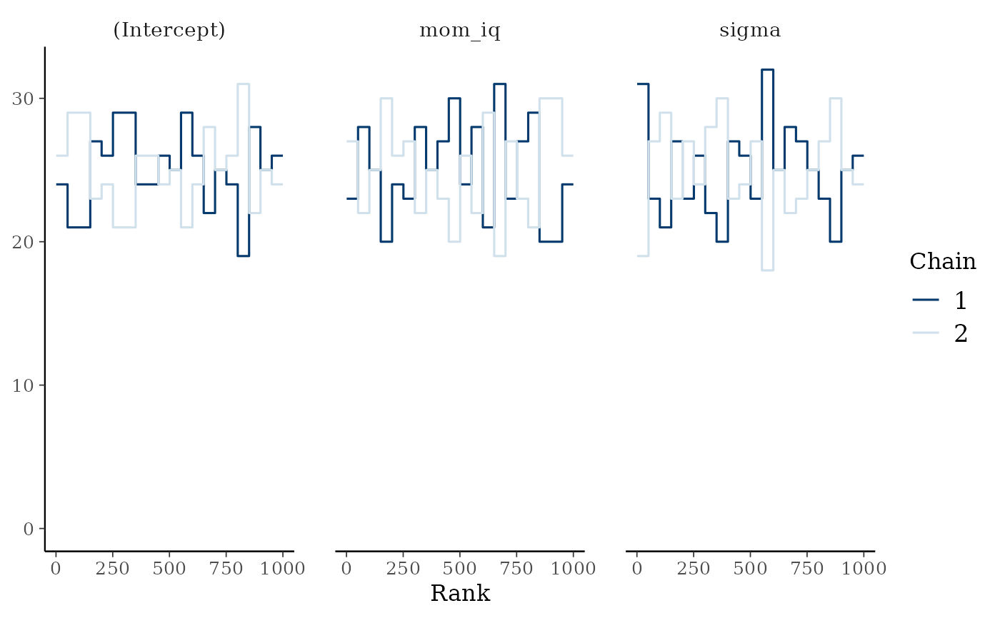

Creates trace, rank, histogram, density and autocorrelation plots with
bayesplot. Rank plots are the most sensitive visual check of mixing
(Vehtari et al., 2021): with well-mixed chains each chain's rank histogram
is approximately uniform.
Usage
generate_plot(
model_fit,
types = c("trace", "rank", "hist", "density", "autocorrelation"),
pars = NULL,
print = TRUE,
...
)
Arguments
- model_fit
A stanreg or stanfit object fitted by MCMC.
- types
Plot types: any of "trace", "rank", "hist",
"density", "autocorrelation".
- pars
Parameters to plot (default: all model parameters).
- print
Print each plot? Set to FALSE to only return them.
- ...
Passed to the underlying bayesplot functions.
Value
Invisibly, a named list of ggplot objects (one per type).
References
Gabry, J., Simpson, D., Vehtari, A., Betancourt, M., & Gelman, A. (2019).
Visualization in Bayesian workflow. JRSS A, 182(2), 389–402.
doi:10.1111/rssa.12378
Examples
# \donttest{
data(kidiq, package = "rstanarm")
fit <- rstanarm::stan_glm(kid_score ~ mom_iq, data = kidiq,
chains = 2, iter = 1000, refresh = 0)
plots <- generate_plot(fit, types = c("trace", "rank"), print = FALSE)
plots$rank

# }